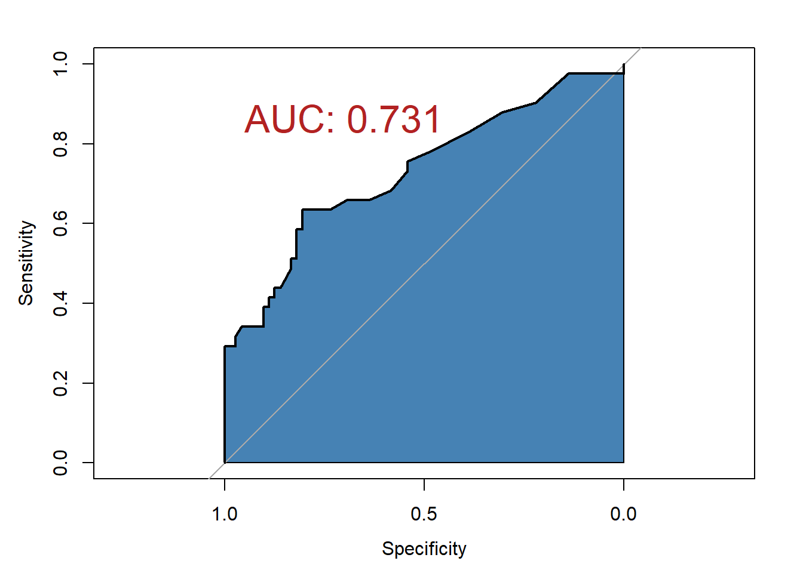

set.seed(20220840)
ca125_1 <- c(rnorm(10,80,20),rnorm(20,50,10))
# 30个人的ca125的值如下
ca125_1
## [1] 51.88470 82.45907 113.66834 63.49476 98.29077 63.27374 74.25079
## [8] 80.22945 83.01740 99.17105 42.52889 54.56804 48.88383 65.67865
## [15] 44.73153 45.99028 55.82554 42.79242 60.84917 64.80764 51.11468
## [22] 43.40118 47.03850 44.75943 68.34163 60.83829 53.32599 59.92225
## [29] 46.46360 30.0291426 ROC曲线
本章内容对应课本第37章第7节：临床诊断实验与评价
ROC（Receiver operating characteristic curve，ROC）曲线首先是由二战中的电子工程师和雷达工程师发明的，用来侦测战场上的敌军载具（飞机、船舰），也就是信号检测理论。之后很快就被引入了心理学来进行信号的知觉检测。数十年来，ROC分析被用于医学、无线电、生物学、犯罪心理学领域中，而且在机器学习（machine learning）和数据挖掘（data mining）领域也得到了很好的发展。
ROC曲线在临床中主要是用来评价诊断试验的，由于ROC曲线和临床诊断试验的联系超级紧密，所以我们有必要先了解一下诊断试验相关的内容。
26.1 诊断试验
科学地评价诊断试验是临床医师选择诊断试验的基础。诊断试验在临床上的应用涉及面甚广，包括病因和病原学诊断，疾病病理和功能损害的诊断，疗效的判断，药物毒副作用的监测，疾病预后的判断以及应用于普查、筛检无症状的患者等。用于不同场合的诊断试验有不同的要求，不同的诊断试验本身又有一定的特性。为了合理选用诊断试验以避免盲目性，临床医师就需要对诊断试验进行科学研究并得出科学的评价。
评价诊断试验的优劣必须以金标准（gold standard）作为参照，没有金标准的诊断试验评价是没有科学性的。所谓诊断试验的金标准，是指当前临床医学界所公认的诊断某病最为可靠的方法。亦即利用金标准能正确地区分某人属”有病”还是”无病”。临床诊断中常用的金标准包括病理学诊断（组织活检和尸检）、外科手术发现、特殊的影像学诊断（如用冠状动脉造影术诊断冠心病等）以及目前尚无特异诊断方法而采用的国际公认的综合诊断标准（如诊断风湿热的Johes标准等）。有时用长期临床随访所获得的肯定诊断，也可作为金标准。必须注意，如果采用的金标准选择不当，就会造成分类错误，从而影响诊断试验正确性的评价。
用于诊断试验评价的研究对象应包括病例组和对照组。病例组应是按金标准确诊的患者；对照组则应是按金标准证实无该病的患者或正常人群。病例组的选择，应包括各种类型的病例，即典型和不典型，早、中、晚各期，病情轻、中、重，有、无并发症等，这样试验的结果才具有普遍意义；而对照组则可选用经金标准证实无该病的其他病例或正常人，特别应当包括确实无该病，但易与该病相混淆的其他病例，这样选择的对照才具有临床意义，尤其具有鉴别诊断的价值。
26.2 诊断试验的评价
根据诊断试验的结果和金标准的结果，可得到4种情况，将其整理成下面的表格，就得到一个诊断试验的四格表，实际上是一个配对四格表的形式：
用于评价诊断试验的常用指标有：灵敏度和特异度，误诊率和漏诊率。
- 灵敏度
灵敏度（sensitivity），又称为真阳性率，是实际患病且被试验诊断为患者的概率，即患者被诊断为阳性的概率。灵敏度=a/(a+c)
- 特异度
特异度（specificity），又被称为真阴性率，是实际未患病而被试验诊断为非患者的概率，即非患者被诊断为阴性的概率。特异度=d/(b+d)
灵敏度是反映检出能力的指标，而特异度是鉴别非患者能力的指标，二者都是越大越好。
- 误诊率
误诊率又称为假阳性率，表示实际未患病但被试验诊断为患者的概率，即非患者被诊断为阳性，反映非患者被错误诊断的可能性。误诊率=b/(b+d)
- 漏诊率
漏诊率又被称为假阳性率，表示实际患病但被试验诊断为非患者的概率，即患者被诊断为阴性，反映患者被遗漏诊断的可能性。漏诊率=c/(a+c)
显然，灵敏度=1-假阴性率，特异度=1-假阳性率。
除了以上4个指标外，还有阳性预测值和阴性预测值，用于评价诊断试验预测的准确性。
- 阳性预测值：positive-predict-value，是试验诊断为阳性者，确为患者的概率。阳性预测值=a/(a+b)。
- 阴性预测值：negative-predict-value，是试验诊断为阴性者，确为非患者的概率。阴性预测值=d/(c+d)。
当两个诊断试验进行比较时，单独使用灵敏度与特异度指标，可能出现一个诊断试验的灵敏度高，而另一个诊断试验的特异度高，无法判断哪一个更好。所以发展出了可以将灵敏度和特异度综合起来评价的诊断试验指标，比如：正确率、比数积、阳新似然比、阴性似然比等。
正确率：又称为准确率（机器学习中被称为accuracy），又称为总符合率，表示观察结果和实际结果的符合程度，反应正确诊断患者与非患者的能力。正确率=(a+d)/N，N是总人数。
约登指数：Youden-index，YI，是反应诊断试验真实性的综合指标，YI=灵敏度+特异度=1。YI的值在-1到1之间，越大说明诊断试验的真实性越好，当YI小于等于0时，该诊断试验无任何临床应用价值。
比数积：odd-product，OP，表示患者中诊断阳性数、阴性数之比和非患者中诊断阴性数、阳性数之比的乘积。OP=se/(1-se) * sp/(1-sp) = ad/bc。OP越大诊断价值越高。
阳性似然比：positive-likelihood-ratio，LR+，表示真阳性率与假阳性率之比。LR+=se/(1-sp)
阴性似然比：negative-likelihood-ratio，LR-，表示假阴性率与真阴性率之比。LR-=(1-se)/sp
26.3 ROC曲线
诊断试验把受试者分成患病和非患病，肯定是有一个标准的，高于这个标准就被判断为患病，低于这个标准就被判断为非患病。
既然有一个标准，那么这个标准就可以有不同的取值，当这个标准变化时，那么被试验判断为患病和非患病的人数自然也就会发生变化。那么灵敏度和特异度这些指标也会发生变化。所以对于不同的诊断取值（被称为截断值），对应着不同的灵敏度和特异度。
我们以灵敏度(或者1-灵敏度)为纵坐标，特异度为横坐标，把不同截断值下的灵敏度和特异度画在一张图上，并把这些点连接成线，就是ROC曲线。ROC曲线下的面积被称为AUC（area under the curve，AUC）。
AUC的取值范围在0到1之间，ROC曲线下的面积越大，也就是AUC越大，说明分类越准确，当AUC值为1时，说明是完美的分类，当AUC为0.5时，说明和乱猜差不多。
下面用一个简单的例子进行说明。
假如，我想根据ca125的值判定一个人到底有没有肿瘤，找了10个肿瘤患者，20个非肿瘤患者，都给他们测一下ca125，这样就得到了30个ca125的值。
假定前10个人是肿瘤，后20个人是非肿瘤。
outcome <- c(rep(c("肿瘤","非肿瘤"),c(10,20)))
outcome <- factor(outcome,levels = c("肿瘤","非肿瘤"))
outcome
## [1] 肿瘤 肿瘤 肿瘤 肿瘤 肿瘤 肿瘤 肿瘤 肿瘤 肿瘤 肿瘤
## [11] 非肿瘤 非肿瘤 非肿瘤 非肿瘤 非肿瘤 非肿瘤 非肿瘤 非肿瘤 非肿瘤 非肿瘤
## [21] 非肿瘤 非肿瘤 非肿瘤 非肿瘤 非肿瘤 非肿瘤 非肿瘤 非肿瘤 非肿瘤 非肿瘤
## Levels: 肿瘤 非肿瘤放在一个表格中方便观看：
df <- data.frame(outcome=outcome,
ca125=ca125_1
)
psych::headTail(df)
## outcome ca125
## 1 肿瘤 51.88
## 2 肿瘤 82.46
## 3 肿瘤 113.67
## 4 肿瘤 63.49
## ... <NA> ...
## 27 非肿瘤 53.33
## 28 非肿瘤 59.92
## 29 非肿瘤 46.46
## 30 非肿瘤 30.03现在如果我们设置ca125>60，判断为肿瘤，ca125≤50判断为非肿瘤，就能得到如下的结果：
df1 <- transform(df, pred = ifelse(ca125>60,"猜他是肿瘤","猜他不是肿瘤"))
df1$pred <- factor(df1$pred,levels = c("猜他是肿瘤","猜他不是肿瘤"))
psych::headTail(df1)
## outcome ca125 pred
## 1 肿瘤 51.88 猜他不是肿瘤
## 2 肿瘤 82.46 猜他是肿瘤
## 3 肿瘤 113.67 猜他是肿瘤
## 4 肿瘤 63.49 猜他是肿瘤
## ... <NA> ... <NA>
## 27 非肿瘤 53.33 猜他不是肿瘤
## 28 非肿瘤 59.92 猜他不是肿瘤
## 29 非肿瘤 46.46 猜他不是肿瘤
## 30 非肿瘤 30.03 猜他不是肿瘤对以上结果稍加整理，就能得出一个四格表：
xtabs(~pred+outcome,data = df1)
## outcome
## pred 肿瘤 非肿瘤
## 猜他是肿瘤 9 5
## 猜他不是肿瘤 1 15这个表格就是诊断实验的四格表。
通过这个表格，我们就可以计算灵敏度和特异度等指标了:
特异度=15/(15+5)=0.75
灵敏度=9/(1+9)=0.9这个表格是以（ca125）60为截断值的，如果我们换一个截断值，那么灵敏度和特异度就会发生变化。
下面我们编写一个函数，让它帮我们计算在不同的截断值下，灵敏度和特异度的值。
cal_roc <- function(df, cutoff){
df <- transform(df, pred = ifelse(ca125>cutoff,"猜他是肿瘤","猜他不是肿瘤"))
df$pred <- factor(df$pred,levels = c("猜他是肿瘤","猜他不是肿瘤"))
tb <- table(df$pred,df$outcome)
sens <- tb[1,1]/colSums(tb)[1]
spec <- tb[2,2]/colSums(tb)[2]
list(sens=sens, spec=spec)
}阈值设置为60，看看是不是和我们上面的结果一样：
cal_roc(df,60)
## $sens
## 肿瘤
## 0.9
##
## $spec
## 非肿瘤
## 0.75可以看到是一样的。
下面就是自己选择多个阈值进行计算，先看下ca125的范围，超出这个范围的阈值没有意义。
range(ca125_1)
## [1] 30.02914 113.66834下面我们确定截断值的范围在30到113之间，每次都加1，然后使用我们的函数计算不同截断值下的灵敏度和特异度：
# 确定取哪些截断值
cutoff <- seq(30,113, 1)
# 计算不同的灵敏度和特异度
rocs <- purrr::map_dfr(cutoff, cal_roc, df=df)
rocs$cutoff <- cutoff
psych::headTail(rocs)
## sens spec cutoff
## 1 1 0 30
## 2 1 0.05 31
## 3 1 0.05 32
## 4 1 0.05 33
## 5 ... ... ...
## 6 0.1 1 110
## 7 0.1 1 111
## 8 0.1 1 112
## 9 0.1 1 113这样我们就得到了不同截断值下的灵敏度和特异度。
有了这个结果后，我们就可以自己画出ROC曲线了，以1-特异度为横坐标，灵敏度为纵坐标：
library(ggplot2)
ggplot(rocs, aes(1-spec,sens))+
geom_point(size=2,color="red")+
geom_path()+
coord_fixed()+
theme_bw()这就是ROC曲线了。
因为不同的截断值对应着不同的灵敏度和特异度，那么肯定就存在一个最佳截断值的问题，一般情况下，使约登指数最大的那个截断值，就是最佳截断值。
- 约登指数=灵敏度+特异度-1
此时的灵敏度+特异度最大，同时也是ROC曲线下的面积（即AUC）最大。
如何寻找这个最佳的截断值呢？当然是挨个试了！但是借助计算机，这个过程一瞬间就完成了。
26.4 用R包绘制ROC
R语言中有非常多的方法可以实现ROC曲线，但是基本上都是至少需要2列数据，一列是真实结果，另一列是预测值（或者叫截断值、阈值、指标等），有了这两列数据，就可以轻松使用各种方法画出ROC曲线并计算AUC。这里给大家介绍这个用的最多的pROC包。
pROC包中提供了一个aSAH数据集，这是一个动脉瘤性蛛网膜下腔出血的数据集，一共113行，7列。其中outcome列是结果变量，1代表Good，2代表Poor：
gos6：格拉斯哥量表评分outcome：结果变量gender：性别age：年龄wfns：世界神经外科医师联合会公认的神经学量表评分s100b：生物标志物ndka：生物标志物
library(pROC)
str(aSAH)
## 'data.frame': 113 obs. of 7 variables:
## $ gos6 : Ord.factor w/ 5 levels "1"<"2"<"3"<"4"<..: 5 5 5 5 1 1 4 1 5 4 ...
## $ outcome: Factor w/ 2 levels "Good","Poor": 1 1 1 1 2 2 1 2 1 1 ...
## $ gender : Factor w/ 2 levels "Male","Female": 2 2 2 2 2 1 1 1 2 2 ...
## $ age : int 42 37 42 27 42 48 57 41 49 75 ...
## $ wfns : Ord.factor w/ 5 levels "1"<"2"<"3"<"4"<..: 1 1 1 1 3 2 5 4 1 2 ...
## $ s100b : num 0.13 0.14 0.1 0.04 0.13 0.1 0.47 0.16 0.18 0.1 ...
## $ ndka : num 3.01 8.54 8.09 10.42 17.4 ...假如我们想使用s100b这个指标作为我们的截断值，来判断结局到底是good还是poor，根据前面的ROC曲线的定义，我们可以绘制一个ROC曲线，使用R包实现非常简单：
# 计算
res <- roc(aSAH$outcome,aSAH$s100b,auc=T)
# 画图
plot(res,auc.polygon=T,auc.polygon.col="steelblue",
print.auc=T,
print.auc.x=0.95,print.auc.y=0.9,print.auc.col="firebrick",
print.auc.cex=2
)
给出的信息非常丰富，不仅画出了图，还给出了ROC曲线下面积（即：AUC）。
# 结果已经存储在res中
res
##
## Call:
## roc.default(response = aSAH$outcome, predictor = aSAH$s100b, auc = T)
##
## Data: aSAH$s100b in 72 controls (aSAH$outcome Good) < 41 cases (aSAH$outcome Poor).
## Area under the curve: 0.7314课本中还介绍了一种平滑的ROC曲线，在pROC中实现也很简单，添加一个参数即可：
# 计算
res_smooth <- roc(aSAH$outcome,aSAH$s100b,auc=T,smooth=T)
# 画图
plot(res_smooth,auc.polygon=T,auc.polygon.col="steelblue",
print.auc=T,
print.auc.x=0.95,print.auc.y=0.9,print.auc.col="firebrick",
print.auc.cex=2
)计算最佳截点也是非常简单的：
plot(res,auc.polygon=T,auc.polygon.col="steelblue",
legacy.axes = TRUE, # 让x轴从0开始
print.thres="best") # AUC最大的点图中的信息显示：最佳截点是0.205，此时的特异度是0.806，灵敏度是0.634，也就是说，当s100b的值是0.205的时候，约登指数最大，同时也是曲线下面积（AUC）最大。
细心的朋友可以可能已经注意到了，上面的ROC曲线的x轴，有的是0-1，有的是1-0，这两种情况都是对的，没必要纠结哈。
26.5 预测模型和ROC
了解了ROC曲线的原理后，使用起来就比较简单了。
以二分类数据为例，如果是在机器学习和临床预测模型中，模型也会对我们的数据作出一个判断，对于每一个样本，模型都会给出两种类型的判断结果，一种是直接给出类别，另一种是给出每种类别的概率，如下所示：
| 真实类别 | 预测类别 | 预测为阳性的概率 | 预测为阴性的概率 |
|---|---|---|---|
| 阳性 | 阳性 | 0.6 | 0.4 |
| 阳性 | 阳性 | 0.7 | 0.3 |
| 阴性 | 阳性 | 0.8 | 0.2 |
| 阳性 | 阴性 | 0.4 | 0.6 |
| 阴性 | 阴性 | 0.2 | 0.8 |
| 阴性 | 阴性 | 0.25 | 0.75 |
| 阴性 | 阴性 | 0.32 | 0.68 |
| 阳性 | 阳性 | 0.7 | 0.3 |
这个概率就是我们的截断值，取不同的概率阈值，就会得到不同的分类结果，我们可以规定当概率大于0.5判断为阳性，也可以规定概率大于0.8判断为阳性。所以不同的概率阈值，也对应着不同的灵敏度和特异度，据此就可以绘制出ROC曲线了。
在实际使用时，我们可以借助多种R包帮我们实现”根据不同的阈值计算计算灵敏度/特异度并绘图”的过程，并不需要自己计算，常用的R包有：ROCR、pROC、yardstick等。
除此之外，ROC曲线既然是通过不同的截断值实现的，那么就必然存在最佳截点的问题；对于生存分析来说，也涉及到time-dependent-ROC等问题；为了增加检验可信度，还有bootstrap-ROC等；还有多分类的ROC曲线等，这些问题可参考以下推文：
- 多时间点和多指标的ROC曲线
- 临床预测模型之二分类资料ROC曲线的绘制
- 临床预测模型之生存资料ROC曲线的绘制
- ROC曲线(AUC)的显著性检验
- 生存资料ROC曲线的最佳截点和平滑曲线
- ROC曲线纯手工绘制
- R语言计算AUC(ROC曲线)的注意事项
- ROC阴性结果还是阳性结果
- 多指标联合诊断的ROC曲线
- ROC曲线最佳截点
- bootstrap ROC/AUC
- R语言多分类ROC曲线绘制
公众号后台回复ROC即可获取以上合集链接。